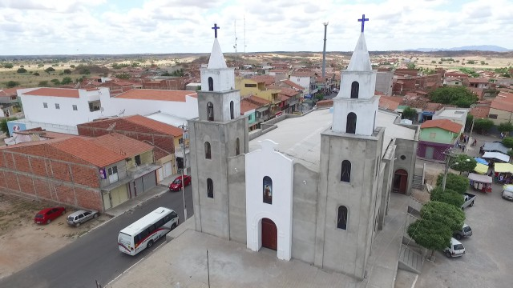

Informações técnicas sobre relevo, população, IDH etc.
| INFORMAÇÕES | |
|---|---|
| Municípios limítrofes | Iguatu, Orós e Icó |
| Fundação | 2 de fevereiro de 1984 |
| Área total | 559,760 km² |
| Clima | Indisponível |
| IDH | 0,592 — baixo |
| PIB | R$ 54 459,106 mil |
| INFORMAÇÕES TERRITORIAIS | |
|---|---|
| Número de habitantes | 16 178 habitantes |
| Superfície de Quixelo |
58 324 hectares
583,24 km² (225,19 sq mi) |
| Densidade populacional | 27,7 ha./km² |
| Altitude de Quixelo | 208 metros de altitude |
| Coordenadas geográficas decimais |
Latitude:
-6.25538
Longitude: -39.1972 |
| Coordenadas geográficas sexagesimais | Latitude: 6° 15' 19'' Sul , Longitude: 39° 11' 50'' Oeste |
| INFORMAÇÕES DO MUNICÍPIO | |
|---|---|
| Endereço da Prefeitura Municipal de Quixelo |
Quixelo
Prefeitura de Quixelo
Rua Pedro Gomes de Araújo, s/n Quixelo - CE, 63515-000 Brasil Work +55 (88) 3579-1210 Fax +55 (88) 3579-1193 |
| Telefone da prefeitura |
(88) 3579-1210
Internacional: +55 88 3579-1210 |
| Fax |
(88) 3579-1193
Internacional: +55 88 3579-1193 |
| Endereço electrónicoda prefeitura |
p.m.q@baydejbc.com.br
|
| Site oficial do município | quixelo.ce.gov.br |
| INFORMAÇÕES DO ADMINISTRATIVAS | ||
|---|---|---|
| Prefeito de Quixelo | Maria de Fatima Araujo | |
| Partido politico | PT | |
| INFORMAÇÕES DE TRANSPORTE | |
|---|---|
| Transporte urbano disponível | |
| Aeroporto |
Aeroporto Regional do Cariri
107.6 km
Aeroporto Dix-Sept Rosado
234.5 km
Aeroporto de Picos
272.6 km
|
| INFORMAÇÕES DE DISTÂNCIA A OUTRAS CIDADES | ||
|---|---|---|
| São Paulo : 2083 km | Rio de Janeiro : 1903 km | Brasília : 1426 km |
| Salvador : 751 km | Fortaleza : 292 km mais perto | Belo Horizonte : 1595 km |
| Manaus : 2337 km | Curitiba : 2389 km | Recife : 517 km |
| Goiânia : 1596 km | Belém : 1163 km | Porto Alegre : 2931 km |
| Guarulhos : 2062 km | Campinas : 2037 km | São Luís : 702 km |
| Distância calculada em linha reta! | ||
Conheça mais sobre a história da Quixelô.
Quixelô foi emancipado de Iguatu em 1985 através de um plebiscito. A presença atual dos descendentes dos Quixelô, alguns com viva memória sobre seus avós e antepassados indígenas questionam o discurso colonialista sobre o "extermínio" dos Quixelô, no passado, e sua "inexistência" na atualidade. Vejamos o relato de Pe Couto que mostra a vitalidade da tradição Quixelô em 1958. Ele não era Quixelô, mas teve contato direto com essa população, a qual se refere como "aquela mesma gente" de "mesma feição", que mantêm "Aquele modus vivendi primitivo, recebido de seus maiorais, qual uma tradição sagrada, não se altera. Donde, quem quer se abalance a contrariá-los em seus seculares hábitos e costumes, verá, de frente, insatisfeita, uma população, que se julga ferida em seus bens etnológicos, herdados.(COUTO, 1960: 26). Há um Sertão indígena Quixelô a ser conhecido e reconhecido.
Saiba mais sobre os melhores lugares e o que fazer em Quixelô.
igreja Matriz

Veja como chegar nos melhores pontos de Quixelô.